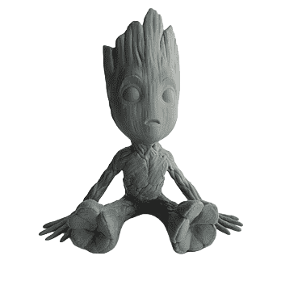

¿En qué consiste?
La impresión 3D es una tecnología que permite crear objetos tridimensionales a partir de un modelo digital. Utiliza un proceso de fabricación aditiva, en el cual el material es depositado en capas sucesivas hasta formar el objeto final. Este método contrasta con los procesos tradicionales de fabricación, que suelen ser sustractivos (es decir, que eliminan material). La impresión 3D ha revolucionado la producción en áreas como la manufactura, la medicina, la arquitectura y más.

Existen varios tipos de tecnologías de impresión 3D, entre las cuales destacan:
- FDM (Fused Deposition Modeling): Es el método más común y asequible. Funciona extruyendo
filamentos de plástico fundido que se colocan en capas.
- SLA (Stereolithography): Utiliza resina líquida que se solidifica capa por capa con un
láser o luz ultravioleta. Este método permite obtener mayor precisión y detalle.
- SLS (Selective Laser Sintering): Funde materiales en polvo con un láser de alta potencia,
permitiendo trabajar con plásticos, metales y otros materiales complejos.
Pasos a seguir para usarla
1. Preparar el modelo 3D:
Diseña o descarga un modelo en formato .STL o .OBJ.
2. Usar un software de corte (slicer): Importa el modelo, ajusta parámetros como altura de capa,
relleno y soportes, y genera el archivo G-code.
3. Preparar la impresora: Nivelar la cama, cargar el filamento.
4. Iniciar la impresión: Selecciona el G-code en la impresora y monitorea el proceso.
5. Retirar el objeto: Espera a que la cama se enfríe y retira con cuidado.
6. Post-procesamiento: Retira soportes y, si es necesario, lija o pinta para mejorar el acabado.